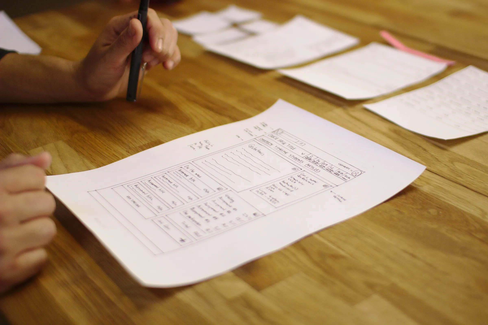
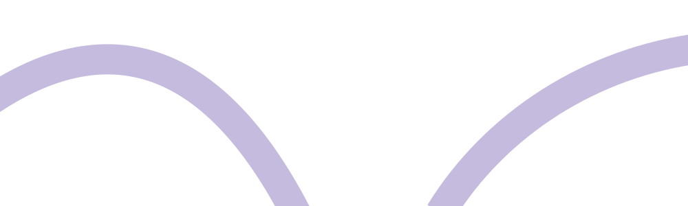
Arquitectura
de la información
Empezar
Cómo organizar, etiquetar y conectar los contenidos de un producto digital para que el usuario encuentre lo que busca.
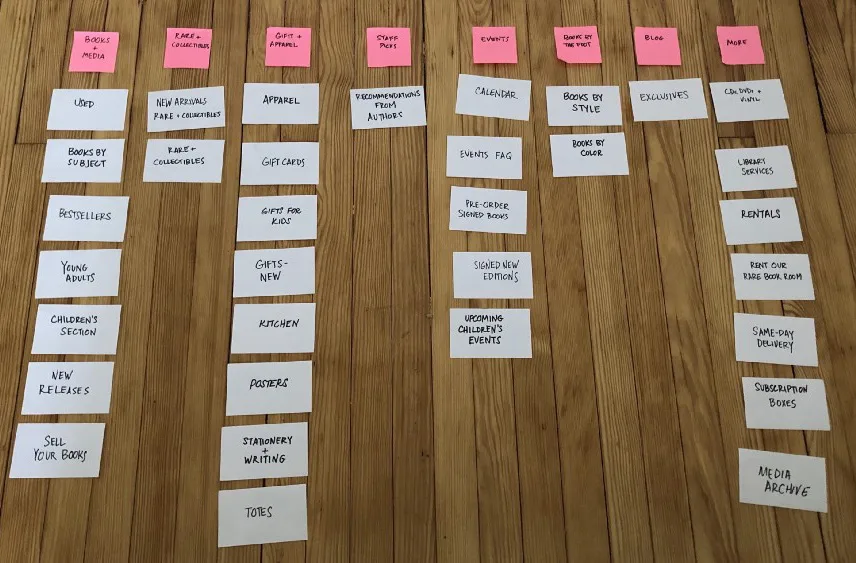
Arquitectura de la información
Qué es, quién la realiza, qué problemas soluciona y cuándo hace falta.
¿Qué es la arquitectura de la información?
Arquitectura de la información
En resumen: un conjunto de decisiones sobre cómo organizar, estructurar y presentar de forma óptima los contenidos de un producto digital. La abreviamos Arq. Inf.
Dónde, qué y cómo
La arquitectura de la información es…
una estructura que permita al usuario saber dónde está, qué puede hacer y dónde encontrar lo que necesita.
Morville y Rosenfeld (2007)
Autores clásicos de la disciplina. Para ellos, la arquitectura de la información es:
- El diseño estructural de los espacios de información compartida.
- La unión de los sistemas de organización, etiquetado y navegación de una aplicación.
- El arte y la ciencia de estructurar la información para facilitar su uso y su acceso.
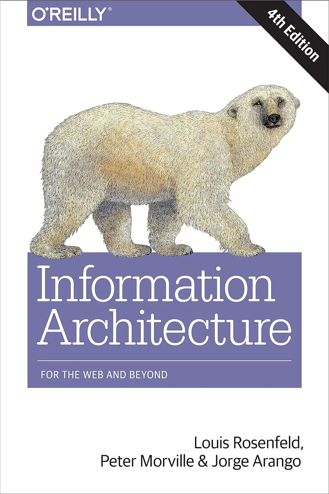
El arquitecto o la arquitecta de la información
Diseña la organización, el etiquetado, la navegación y la búsqueda que ayudan a los usuarios a encontrar y gestionar la información.
Es uno de los primeros perfiles que traduce lo decidido en UX a elementos que tendrán forma visual en la interfaz.
Se encarga de diseñar:
- El sistema de clasificación de la información.
- El etiquetado de las opciones.
- La estructura de navegación y los flujos.
- El sistema de búsqueda.
- El inventario de contenidos.
Principales dificultades
Según Morville y Rosenfeld (2007)
- Ambigüedad del lenguajeLlamamos de varias formas a las mismas cosas, y los términos cambian según el contexto geográfico, social o generacional.
- Heterogeneidad de propósitosUna biblioteca solo busca que encuentres el libro; una web debe dar acceso por artículo, capítulo, sección, cita…
- Diferentes perspectivasCada autor organiza según su propio modelo mental. La referencia debe ser el usuario final.
- Aspectos culturalesLos de la sociedad y los de la propia organización, con sus restricciones internas.
Usuario, contenido y contexto
- Usuarios: qué saben del tema y qué necesitan hacer, encontrar o aprender.
- Contenido: de qué contenido disponemos y cuál necesitamos.
- Contexto: objetivos del usuario y del negocio, personas implicadas, dispositivos y limitaciones.
Por eso, antes de diseñar la arquitectura hay que investigar con usuarios.
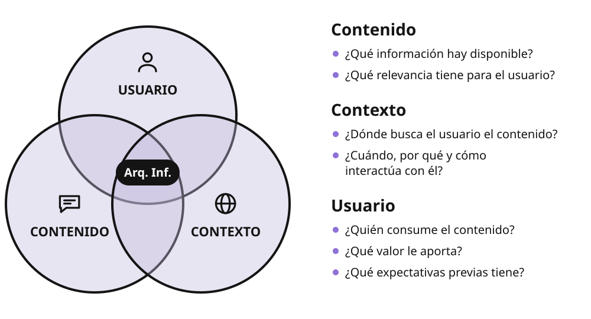
Ideas básicas
Seis ideas para no perder nunca de vista al usuario.
- Organiza la información desde el punto de vista del usuario final.
- Ofrece la información de un modo simple.
- Usa palabras que el usuario entienda.
- Muestra con claridad dónde está el usuario.
- Muestra con claridad los pasos que puede dar.
- Busca su satisfacción dentro de la lógica del negocio.
Pasa inadvertida
Una buena arquitectura de la información pasa inadvertida.
Los usuarios solo la notan cuando está mal hecha: cuando la navegación confunde o la organización no tiene sentido. Si todo va bien, la experiencia es natural y eficiente.
Problemas de arquitectura en una interfaz
Pueden aparecer solos o combinados. No son los únicos: también hay problemas técnicos, visuales o de interacción.
- ComunicativosTono o léxico inadecuado: el producto habla la jerga de la organización y el usuario tiene que esforzarse para entenderlo.
- De navegación y ubicaciónAl usuario le cuesta encontrar los contenidos o moverse entre ellos.
¿Cuándo hace falta diseñar la Arq. Inf.?
Cuando el volumen de información obliga a agrupar términos o ideas, y esos grupos deben etiquetarse según el modelo mental de los usuarios.
Inventario de contenidos
No podemos organizar algo sin saber qué estamos organizando.
Inventario de contenidos
En un rediseño partimos de contenido que ya existe. Hay que analizarlo para decidir qué se queda, qué se descarta y qué falta. Basta una hoja de cálculo.
- Completo: todas las páginas, todos los archivos (PDF, vídeo, audio, imágenes) y el contenido generado por los usuarios.
- Parcial: da una idea de los tipos de contenido, los niveles y las categorías.
| Página | Ubicación | Plantilla | Tipo | Modificada | Decisión |
|---|---|---|---|---|---|
| Inicio | / | Portada | Navegación | 12/09/2025 | Mantener |
| Estudios | /estudios | Listado | Navegación | 03/06/2025 | Revisar |
| Diseño gráfico | /estudios/grafico | Ficha | Contenido | 15/01/2024 | Actualizar |
| Matrícula | /secretaria/matricula | Formulario | Interacción | 20/05/2025 | Mantener |
| Noticias 2019 | /noticias/2019 | Listado | Contenido | 11/11/2019 | Eliminar |
| Contacto | /contacto | Formulario | Interacción | 02/02/2025 | Mantener |
Ventajas de crear un inventario de contenidos
- Saber qué hayUna lista real de páginas y archivos, sin depender de la memoria del cliente.
- Decidir qué se quedaDetecta contenido obsoleto, duplicado o que nadie visita.
- Ver qué faltaComparado con lo que necesita el usuario, revela los huecos.
- Base para la taxonomíaMuestra los tipos de contenido y las categorías que ya existen.
También ayuda a calcular el trabajo de migrar o reescribir el contenido en un rediseño.
Modelo de contenido
En un proyecto nuevo definimos la estructura de cada tipo de contenido: qué información tiene, con qué se relaciona y qué metadatos lleva.
- Un artículo: autor, categoría, título, imagen destacada…
- Un producto: precio, imágenes, filtros, accesorios, descripción…
Recopilar: qué preguntarse
A partir de la investigación con usuarios, el análisis de la competencia y la lluvia de ideas.
- ¿Qué formato es el ideal? Para explicar cómo se monta un mueble, un vídeo corto funciona mejor que un texto largo.
- ¿Qué extensión tendrá? Una ficha de producto: 3 o 4 líneas y las especificaciones en una lista.
- ¿A qué audiencia va dirigido? En la web de la escuela: aspirantes, alumnado y profesorado necesitan información distinta.
- ¿Cuánto tiempo estará vigente? El horario de un curso caduca cada año; la historia de la escuela, no.
- ¿Cómo se actualizará? Las noticias las publica cada semana el equipo de comunicación desde el gestor de contenidos.
Contenidos estructurados y no estructurados
- EstructuradosSe dividen en piezas bien definidas, como una ficha de producto. Permiten usar plantillas.
- No estructuradosSu composición varía de uno a otro.
Taxonomía web
El sistema de clasificación, organización y etiquetado del contenido de una web o una app.
Taxonomía
Es un pilar de la arquitectura de la información. Ayuda a los usuarios a encontrar, comprender y recorrer la información, y mejora la usabilidad y la accesibilidad.
Define:
- Los tipos de contenido (páginas, productos, artículos…).
- La estructura jerárquica.
- Las relaciones entre las distintas piezas de contenido.
La taxonomía como jerarquía de metadatos
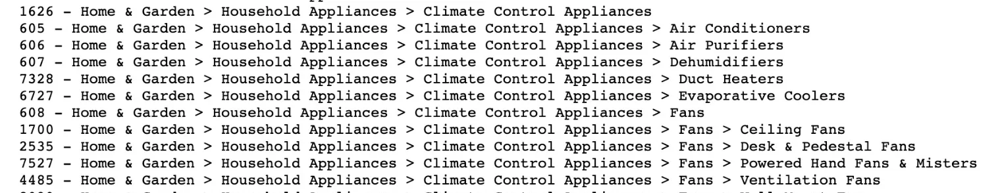
Beneficios de una buena taxonomía
- Mejor experienciaEl usuario encuentra rápido lo que busca, con menos fricción y frustración.
- AnticipaciónSi entiende cómo se relacionan las categorías, sabe dónde buscar y cómo moverse.
- Mejor SEOLos buscadores entienden y clasifican mejor el contenido.
- Un lenguaje comúnAlinea los términos del sitio con los del usuario.
Componentes clave
- Categorías y subcategoríasDivisiones lógicas y jerárquicas: Electrónica › Teléfonos móviles › Accesorios.
- Etiquetas (tags)Palabras clave que permiten una clasificación múltiple o facetada: oferta, 5G, Android.
- Sistemas de navegaciónMenús, migas de pan y filtros que guían al usuario por la estructura.
Las categorías deben ser…
- Mutuamente excluyentesClaramente diferenciadas, sin solapamientos ni confusión.
- ExhaustivasEntre todas, completan el sistema que representan.
Pasos para crear una taxonomía
- Reunir los conceptosDe la investigación con usuarios, los datos existentes, los expertos y los términos del negocio.
- InventariarHacer un inventario de contenidos detallado.
- Buscar un estándarVer si existe una taxonomía del sector y adaptarla al contexto.
- Crear reglasDefinir cómo se agrupan los contenidos.
- NombrarCon términos que informen al usuario, no solo con la jerga del negocio.
- Jerarquizar y relacionarFijar las relaciones padre-hijo y las relaciones entre categorías.
Etiquetas y navegación
Las etiquetas (tags) son palabras clave que complementan a las categorías y permiten una clasificación más precisa.
En la taxonomía buscamos la precisión lógica. Cuando se muestra como navegación, agrupamos según los modelos mentales del usuario.
No hay que confundir la taxonomía con el sitemap. Permite la navegación facetada: aplicar varios filtros a la vez.
Sistemas de clasificación
Los criterios para ordenar los contenidos. Pueden ser exactos o ambiguos.
Exactos y ambiguos
- Exactos (objetivos)Útiles cuando el usuario busca algo que ya conoce. Alfabética, cronológica, geográfica y numérica.
- Ambiguos (subjetivos)Para explorar o buscar con criterios personales. Parecen imprecisos, pero suelen ser más útiles: temática, lineal, por tareas, por audiencia, metafórica, por empresa e híbrida.
Alfabética
Por nombre, título, apellido, producto, servicio o departamento. Es la de enciclopedias, diccionarios y directorios.
Cronológica
Según cuándo ocurrió: fecha de publicación, acontecimientos históricos, programación de televisión.
El timeline de una red social usa el orden cronológico inverso: lo más reciente, primero.
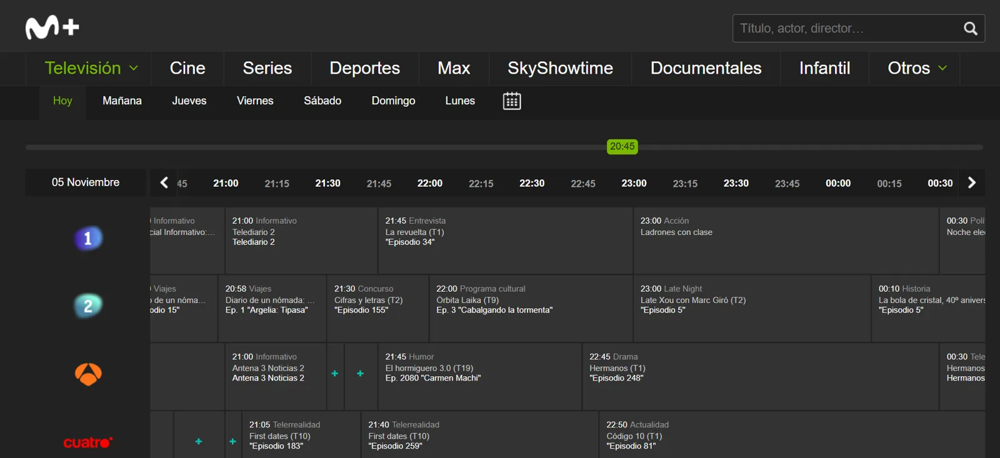
Geográfica y numérica
- GeográficaSegún el lugar con el que se relaciona cada contenido.
- NuméricaPor posición, por valor, en orden ascendente o descendente: precios, descuentos, tallas, rankings, prioridades.
Temática o por categorías
Según las materias o áreas de conocimiento. Se adapta al dominio del producto: en un comercio electrónico, son los tipos de producto.
Lineal
La información se presenta en secuencia, a medida que el usuario avanza o hace scroll. Muy presente en móviles y redes sociales.
Necesita una forma de volver a una sección sin deshacer todo el scroll.
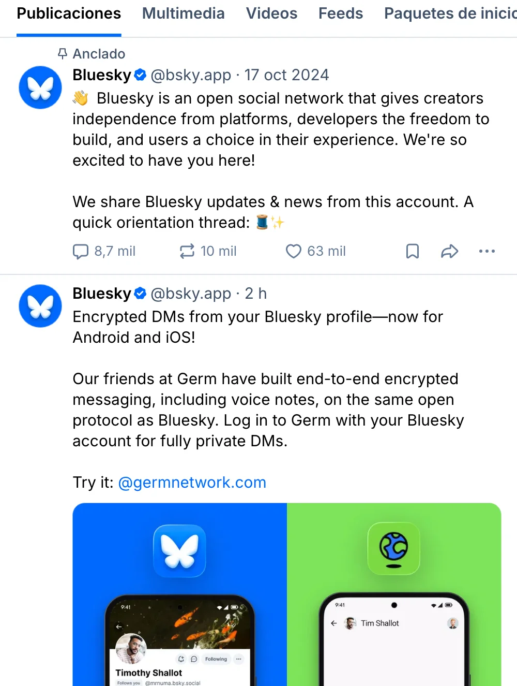
Orientada a tareas
La información se ordena según el paso de la tarea al que pertenece. Reservar un vuelo, comprar un billete o pagar son ejemplos claros.
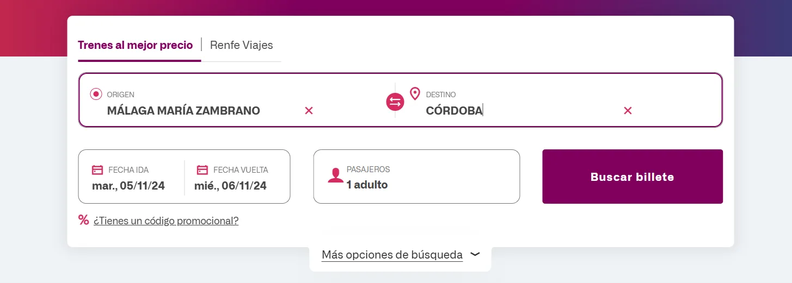
Orientada a la audiencia
Crea secciones para cada grupo de usuarios, con la información que le interesa. Funciona bien cuando un tipo de usuario vuelve a menudo para lo mismo.
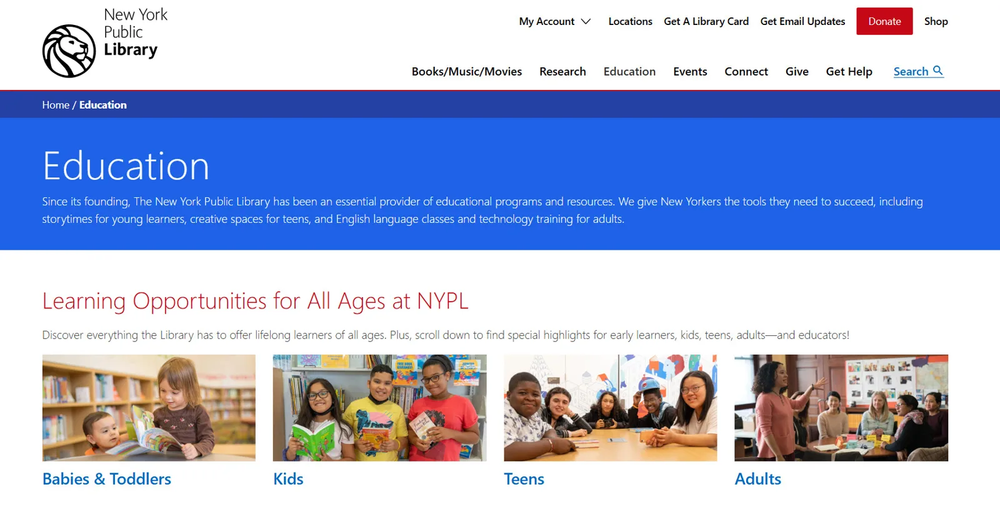
Metafórica
Explica el contenido mediante algo que la audiencia reconoce fácilmente. La metáfora tiene que entenderla todo el público, no solo unos pocos.
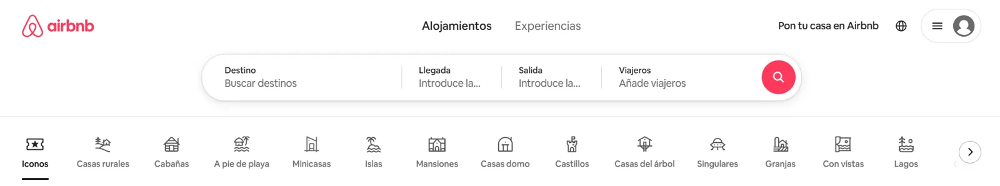
Por empresa
Sigue la estructura interna de la institución: departamentos o áreas de negocio.
Se desaconseja: el usuario no tiene por qué conocer esa estructura. Solo tiene sentido para un público especializado.
Híbrida
Casi nunca encontramos un tipo puro. Lo normal es combinar varios, desde el principio o a medida que se profundiza en la estructura.
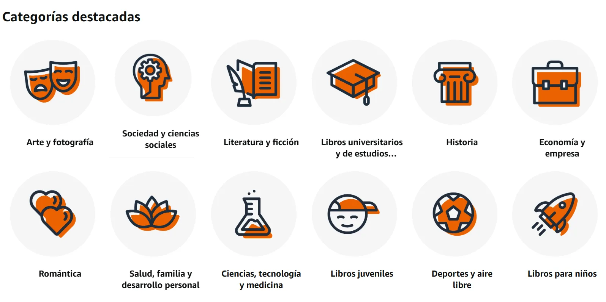
Una clasificación incorrecta
Mezclar varios criterios en un mismo nivel desorienta al usuario.
¿Qué criterio sigue cada opción de este menú?
Card sorting
Técnica para descubrir cómo agrupan las personas la información. Es fácil, barata y detecta los términos confusos.
- Cada elemento se escribe en una tarjeta.
- Cada participante agrupa las tarjetas como le parece y pone nombre a los grupos.
- Se comparan los resultados. Si no hay consenso, se renombra el elemento o se incluye en más de una categoría.
Card sorting: claves
- ParticipantesRepresentativos de los usuarios, al menos seis, y cada uno por separado para evitar el sesgo del consenso.
- AbiertoLos participantes ponen nombre a los grupos.
- CerradoLos nombres de los grupos ya vienen dados.
- HerramientasEn línea, por ejemplo OptimalSort.
Estructuras de organización
Cómo se relacionan los contenidos. Una buena estructura permite al usuario predecir dónde encontrará la información.
Estructura organizativa
Es la forma de definir las relaciones entre los contenidos. Debe ser coherente con el usuario: sus expectativas, sus conocimientos y sus experiencias previas.
Las tres principales son la jerárquica, la secuencial y la matricial.
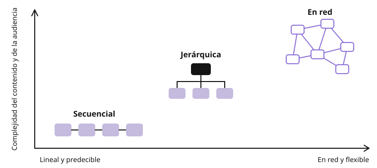
Estructura jerárquica
Sigue un modelo de arriba abajo (top-down): de lo general a lo específico, como un árbol genealógico.
Organiza la información en grupos y subgrupos, de elementos padre a elementos hijo.
Jerarquía amplia o profunda
- Amplia: muchos elementos en el primer nivel y pocos niveles.
- Profunda: pocos elementos en el primer nivel y muchos niveles.
Hay que buscar el equilibrio entre amplitud y profundidad.
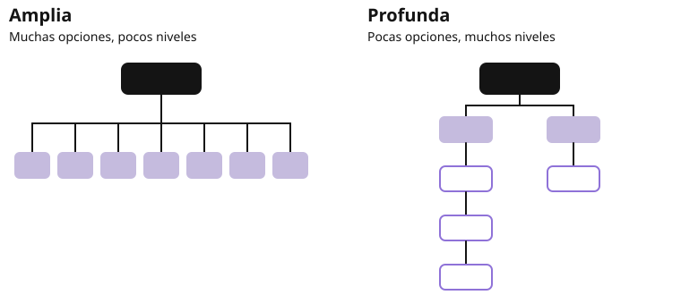
Amplitud y profundidad
Con más de diez opciones en el menú principal, el usuario se siente abrumado. Demasiadas opciones arriba y poco contenido debajo decepcionan.
Con más de cuatro o cinco niveles, el usuario se rinde. Si no se puede cumplir, los menús más amplios van en el primer nivel.
Jerarquías estrictas y polijerarquías
- EstrictaUn elemento solo puede pertenecer a una categoría padre.
- PolijerarquíaUn elemento puede colgar de varias categorías padre.
Las categorías deben ser excluyentes. Puede haber excepciones, pero demasiadas confunden.
Cuándo usar una estructura jerárquica
- Mucho contenidoEs muy adecuada para grandes volúmenes.
- Webs institucionalesY corporativas, donde importa el orden de acceso.
- OrientaciónEl usuario sabe siempre en qué nivel está.
¿Qué es más escalable, una jerarquía amplia o una profunda?
La amplia y poco profunda. Tiene más categorías generales donde incluir contenidos nuevos sin reestructurarlo todo. Escalabilidad es la capacidad de un sistema de crecer de forma eficiente.
Estructura secuencial
Marca un camino paso a paso. Presupone que hay un orden óptimo de los contenidos.
Su rigidez, y la dificultad para adelantar o retroceder, pueden hacer la navegación lenta y tediosa.
Se usa en tutoriales y en procesos de compra.
Tipos de estructura secuencial
- Lineal simple: todo en un orden cerrado, como un libro.
- Lineal con digresiones: una secuencia principal con desvíos para contenido adicional que vuelven al flujo, como las lecciones de un curso online.
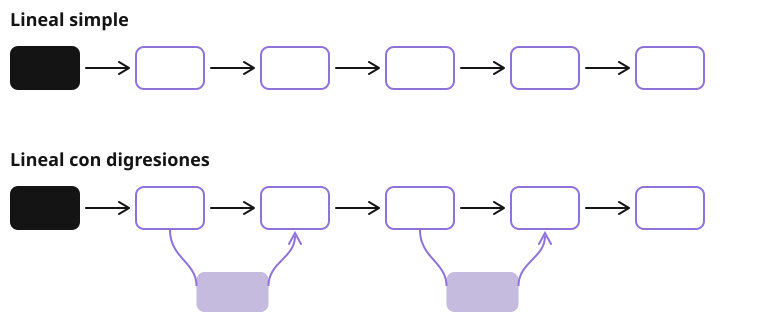
Cómo suavizar una estructura secuencial
Para evitar la frustración, se combina con tres tipos de enlace:
- De vecindad: para moverse entre elementos del mismo nivel.
- De retorno: para volver a pantallas anteriores.
- De índice: para saltar a una información concreta.
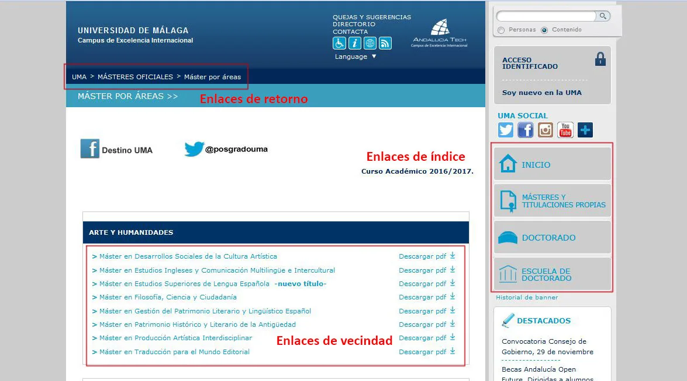
Estructura matricial
También llamada en red o hipertexto. Los contenidos se conectan entre sí sin seguir un único camino.
- Sin orden aparente y con poca o ninguna jerarquía.
- Navegación muy libre y muchos enlaces dentro del contenido.
- Puede desorientar al usuario.
Usos de la estructura matricial
Juegos, proyectos experimentales y medios digitales.
No suele ser buena como estructura principal: funciona mejor como complemento de una jerárquica.
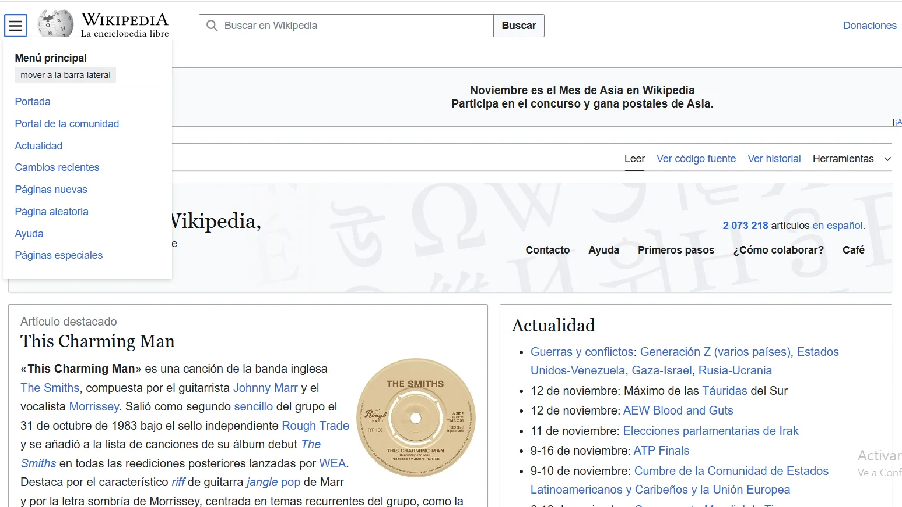
Recomendaciones para una estructura en red
- Temas conectadosAgrupa los contenidos en bloques que se enlacen con lógica.
- Pocos enlacesSolo los necesarios: claros y relevantes.
- OrientaciónMenú fijo, buscador o migas de pan para no perderse.
- CoherenciaDiseño y navegación consistentes para crecer sin desorden.
Modelo de base de datos o catálogo
Variante ascendente (bottom-up) que se apoya en los metadatos. Permite filtrar y buscar, y enlazar información relacionada.
Todos los elementos comparten las mismas piezas: nombre, descripción, marca, etiquetas, foto, existencias, precio…
Para colecciones homogéneas, como un catálogo de productos.
Esquemas combinados
Lo habitual es combinar: una jerarquía para los primeros niveles y un catálogo para el detalle.
Es el patrón más frecuente en la web, sobre todo en el comercio electrónico. Arriba, las categorías; abajo, los productos.
Navegación
Los componentes que muestran al usuario dónde está, qué puede hacer y adónde puede ir.
Elementos de navegación
Componentes de la interfaz (menús, enlaces, migas de pan, acordeones…) que muestran al usuario qué pantalla está viendo, qué puede hacer y adónde puede ir.
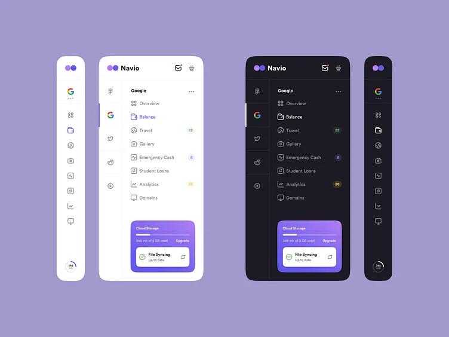
¿Qué elementos son de navegación global y cuáles de navegación contextual?
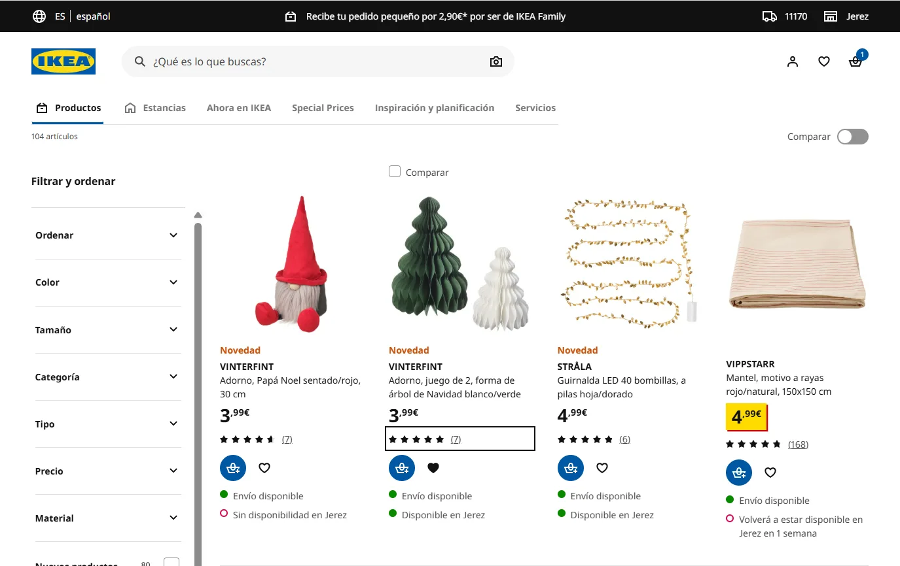
Jerarquía visual de la navegación
- Por importanciaDefine una jerarquía visual según la importancia de cada elemento.
- DistinguibleEl usuario debe diferenciar la navegación del contenido y de las demás opciones interactivas.
- VariablePuede cambiar según la pantalla, pero siempre aclara qué es interactivo.
Recuerda: hay tres estructuras básicas (jerárquica, lineal y en red), y lo normal es combinarlas.
Decisiones sobre cada componente
- Prioridad de uso¿Cuánto lo usarán? ¿Navegan sobre todo con la navegación local o con los enlaces relacionados?
- Ubicación¿En qué pantallas debe estar? ¿Arriba, a la izquierda, a la derecha, abajo?
- Patrón¿Qué patrón favorece la búsqueda y el descubrimiento: pestañas, megamenú, carrusel, acordeón…?
Cómo mantener al usuario orientado
- Coherencia visual
- Misma estructura, color, tipografía y logotipo en todas las pantallas.
- Jerarquía visual
- Arriba a la izquierda, lo más importante. Nunca dos menús en zonas equivalentes.
- Migas de pan
- Dicen dónde está y de dónde viene: Inicio › Sección › Subsección.
- Enlaces visitados
- De un color distinto al de los enlaces sin visitar.
- Sin redundancia
- Dos opciones que hacen lo mismo hacen dudar.
- Mapa del sitio
- Da una visión global y ayuda a reorientarse.
Etiquetado o rotulación
Las palabras son la cara visible de toda la organización.
La etiqueta
Es el texto de un elemento interactivo.
Transmite la organización, la navegación y el tono del producto, y también los valores y la imagen de la marca.
Es etiqueta todo lo que describe una porción de contenido: enlaces, cabeceras, iconos…
Las etiquetas y el lenguaje
El usuario llega con una idea y unas palabras en la cabeza.
Hace clic en lo que encaja con su idea. Si no lo encuentra, busca algo parecido. Si tampoco, se va. Por eso las etiquetas deben adaptarse a lo que el usuario espera.
¿Cómo se llama este patrón de comportamiento?
Satisficing (de satisfy y suffice): elegir la primera opción que parece suficientemente buena.
Dos principios
- Contenido innovador, etiquetas obviasAunque el contenido sea original, las etiquetas deben ser previsibles, para que no haya dudas sobre lo que representan.
- Etiquetas con vida largaDeben adaptarse bien, aunque cambiarán cuando cambien los contenidos o se reagrupen.
Tipos de etiquetas
- Enlaces contextuales
- Hipervínculos dentro del texto. Las palabras no significan lo mismo para todos y el texto que las rodea puede confundir: deben ser directos y significativos.
- De cabecera
- Anuncian el contenido de una sección; tipografía y color indican su jerarquía. Términos habituales: Inicio, Contacto, Quiénes somos…
- De navegación
- Pocas opciones presentes en casi todas las pantallas: exigen diseño y consistencia.
- De índice
- Una alternativa a la búsqueda libre, como un índice alfabético.
- Iconos
- Representan el contenido de forma figurada. Mejor siempre acompañados de texto.
Iconos: convenciones
- Usuario
- Idioma
- Inicio
- Teléfono
- Correo
- Ubicación
- Búsqueda
- Información
- Editar
- Ajustes
- Ayuda
Recomendaciones para etiquetar
- Lenguaje del usuarioQue reconozca al momento la función de cada opción y adónde le lleva.
- Sin clickbaitNi demasiado genérico ni un texto que engañe: la decepción arruina la experiencia.
- ClaridadTantas palabras como hagan falta, concretas, y con significado propio.
- AvisosSi hace falta registrarse o se sale de la página, dilo. Si el destino es obvio, no.
- Información emergenteLos tooltips sobre el destino del enlace son muy útiles.
Más recomendaciones y qué evitar
Haz
- Consistencia: mismo término, tono y aspecto en todas sus apariciones.
- Uso cotidiano: los términos más cercanos para tu audiencia, siempre que sean correctos.
- Corrección: evita términos incorrectos aunque los usuarios los usen.
- Un solo enlace: no repitas el mismo enlace cada vez que aparece la palabra.
Evita
- Dobles sentidos: la ambigüedad semántica.
- Arbitrariedad: términos con un significado distinto del habitual.
- Etiquetas vacías: las que no informan del contenido.
- Solapamientos: etiquetas que no son excluyentes entre sí.
Tipología de páginas
Cada pantalla tiene una función principal, aunque combine varias.
Objetivos de una página
- Mostrar informaciónMuchas cosas de forma somera, o una sola en detalle.
- Facilitar una tareaO procesar información.
- CrearOfrecer herramientas para crear algo.
Páginas de navegación: qué considerar
- Cuántos resultados hay que mostrar y cuánto espacio hay.
- Si existe alguna jerarquía, y de qué tipo.
- Cómo se ordenan y si el usuario puede cambiar el orden.
- Cómo se busca y si el usuario puede filtrar.
- Qué información u operaciones tiene cada elemento, y cuándo mostrarlas.
Destacado, búsqueda y lista
Muchas portadas combinan tres elementos:
- Un elemento destacado (producto, noticia, artículo) para atraer al usuario.
- Una caja de búsqueda para quien sabe lo que busca.
- Una lista de elementos o categorías para explorar.
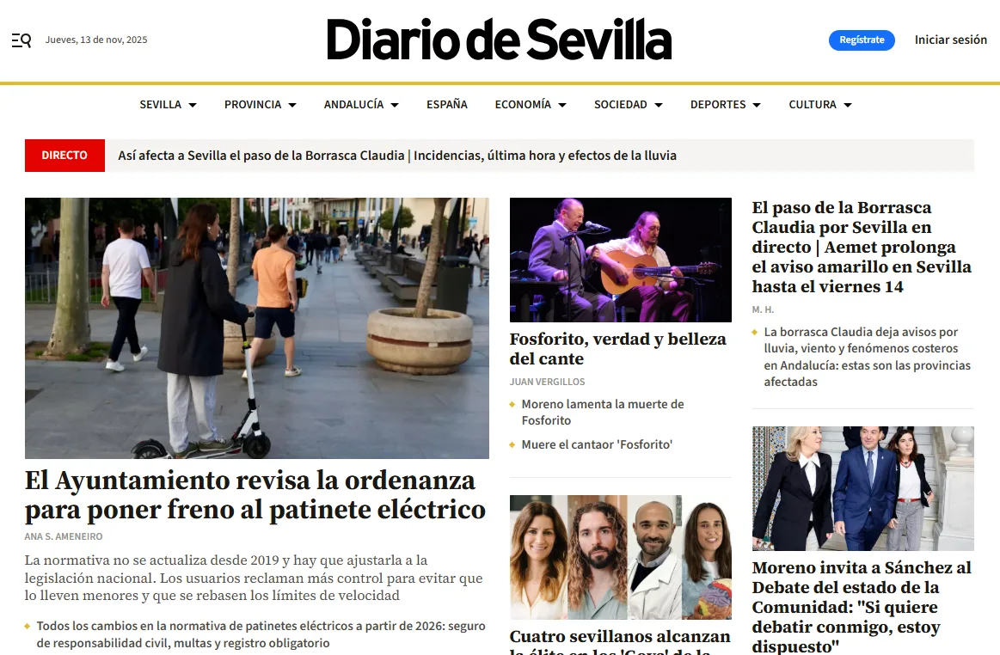
Tres portadas, tres prioridades
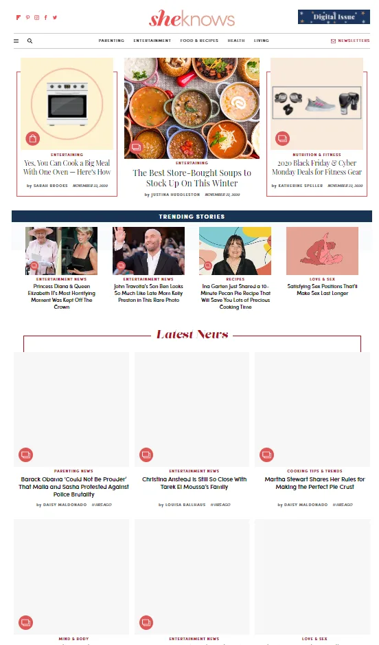
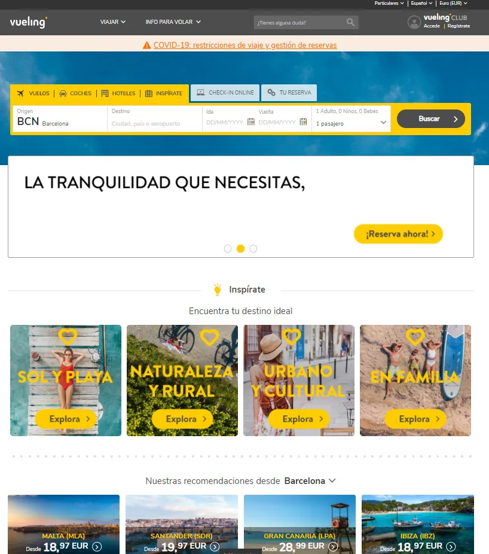
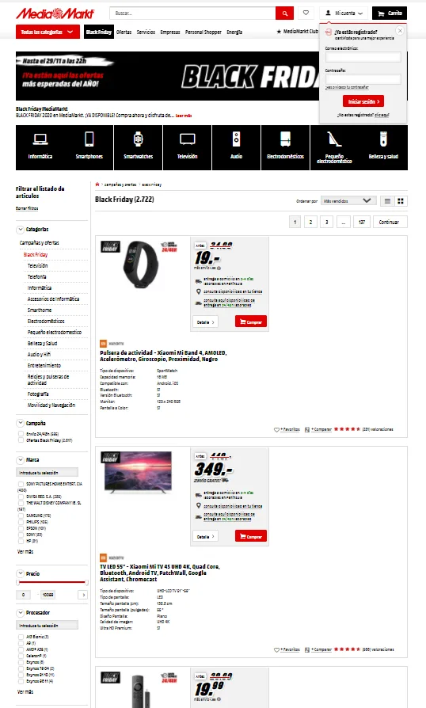
Páginas de consumo de contenidos
Son el destino: aquí se leen los artículos, se ven los vídeos y se escucha la música.
Deben favorecer que la información se vea, se interprete y se procese bien.
Consumo: fichas de producto
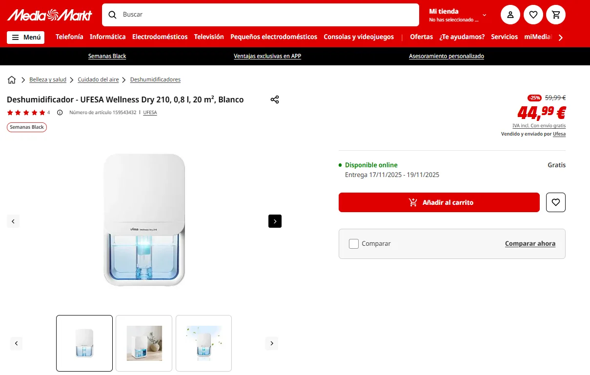
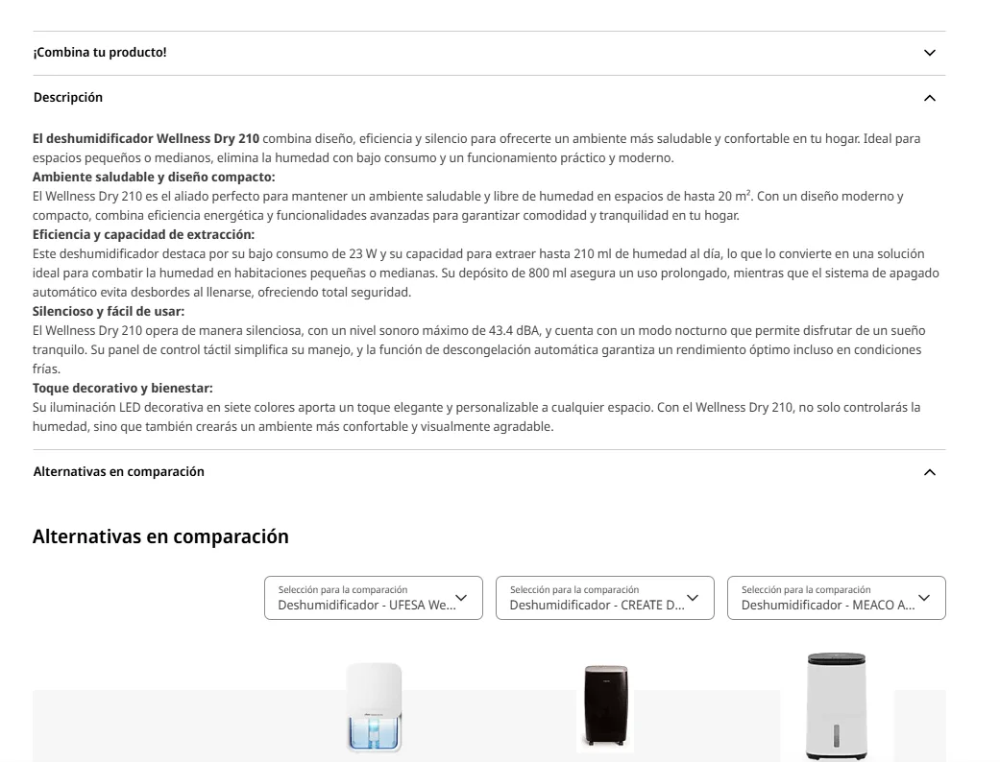
Páginas de interacción
El usuario introduce o manipula datos: escribe, dibuja, edita, borra…
Pueden ser muy simples, como la portada de Google, o muy complejas, con muchos elementos de interacción. Las complejas exigen más tiempo para familiarizarse.
Páginas mixtas
La mayoría de páginas combinan varios tipos, pero siempre predomina uno: la función principal de la página.
Google Maps combina interacción y consumo; predomina el consumo, porque el mapa está para verlo.
Agrupar tareas y subtareas
Una página puede dedicarse a una tarea principal y agrupar sus subtareas o tareas relacionadas.
A veces una tarea es tan pequeña que no merece una página propia y se suma a otra.
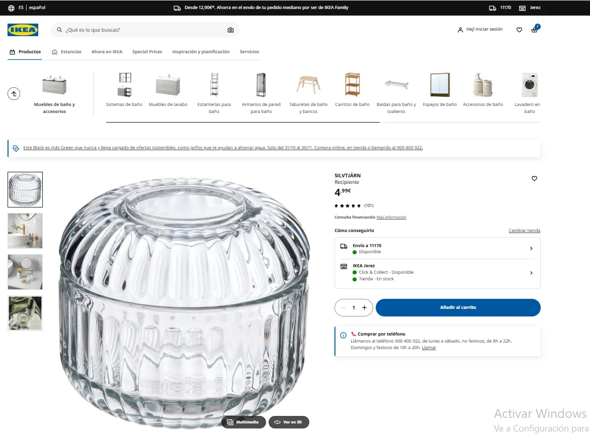
Cómo agrupar y cuánto espacio dedicar
- Experiencia del usuarioEl experto procesa más información en una página; el novato agradece recibirla por partes.
- Cantidad de informaciónDemasiado contenido junto supera la capacidad de atención.
- Dificultad de la tareaLas tareas complejas se dosifican para que no se abandonen a medias.
Sistemas de búsqueda
Rastrean, indexan y clasifican el contenido para encontrarlo rápido mediante palabras clave.
Por qué incluir un buscador
- ControlEl usuario decide su camino sin depender de las opciones del menú.
- RescateSi se desorienta, puede seguir. Por eso conviene que esté en todas las páginas.
Cómo diseñar la búsqueda
- Una caja de texto con un botón: «Buscar» o una lupa.
- Lo bastante ancha para una búsqueda habitual.
- Una buena organización del contenido, para acertar a la primera: casi nadie lo intenta dos veces.
- La búsqueda avanzada confunde a muchos: mejor en la página de resultados que en la de inicio.
Apartados y resultados
- Si se puede limitar a apartados, «todos» es la opción por defecto.
- El apartado buscado se indica en la cabecera de los resultados.
- Ampliar los apartados no cuesta esfuerzo.
- Si hay demasiados resultados, se sugiere cómo acotar.
- Los resultados van por relevancia: casi nadie pasa de la primera página.
Entregables
Documentos que reflejan el resultado del trabajo. Según el proyecto se generan unos u otros, pero lo importante es el proceso.
Wireframe
Esquema visual básico que representa la estructura, la disposición y la funcionalidad de una pantalla: dónde irán los textos, los botones y las imágenes, y cómo se interactúa.
No incluye colores, tipografías ni imágenes finales. Se usa en las primeras fases del proyecto.
Para qué sirve un wireframe
- PlanificarLa disposición y la jerarquía, antes de las fases de diseño más costosas.
- ComunicarEntre diseño, desarrollo, cliente y el resto del equipo.
- Detectar problemas prontoCuando los cambios todavía son rápidos y baratos.
- Ahorrar tiempoSe itera la estructura sin discutir aún la estética.
Tipos de wireframe según su fidelidad
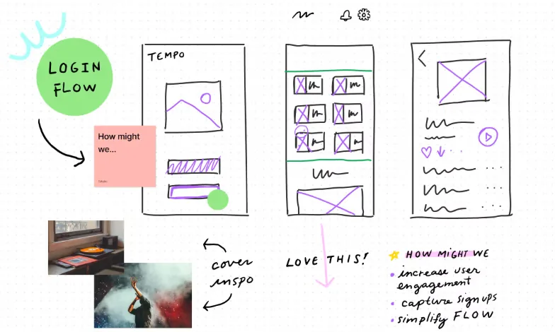
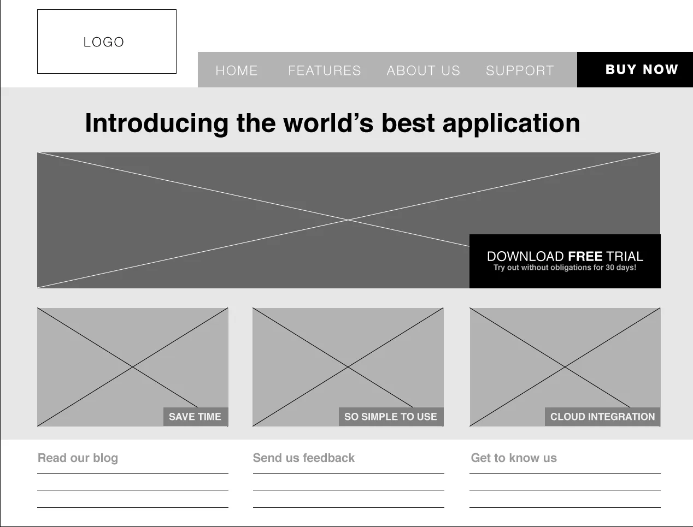
Wireflow
Estructura + interacción + navegación.
Combina los wireframes con la lógica de un diagrama de flujo. Muestra cómo navega el usuario por varias pantallas hasta completar una tarea.
Componentes de un wireflow
- Pantallas: wireframes de baja o media fidelidad de las interfaces clave.
- Flechas y conectores: la dirección del flujo y la acción que provoca cada transición (clic, deslizar…).
- Anotaciones: comportamientos del sistema, microcopy y reglas de negocio.
Beneficios del wireflow
- Claridad para todo el equipoUna visión global fácil de entender para diseño, desarrollo, producto y cliente.
- Detección tempranaPuntos de fricción, rutas confusas o errores no previstos.
- Documentación vivaSe actualiza a medida que evolucionan los requisitos.
Sitemap
Muestra la estructura de contenidos del producto: la jerarquía y las relaciones de todos sus nodos clave (páginas o pantallas). Es una herramienta de planificación.
No es una lista de URLs. No está pensado para el usuario, aunque a veces se muestra en el pie de página para completar la navegación.
Un sitemap por niveles
Beneficios del sitemap
- Visión globalTodo el equipo y el cliente ven de un vistazo qué pantallas hay y cómo se relacionan.
- Detecta huecos y duplicadosContenidos sin sitio, ramas demasiado profundas o secciones que se repiten.
- Guía la navegaciónIndica qué debe ir en el menú principal y qué se enlaza con navegación contextual.
- Planifica el trabajoSirve para estimar cuántas pantallas y plantillas hay que diseñar y desarrollar.
Además, facilita que el producto crezca: se ve dónde encaja cada contenido nuevo.
Arquitectura de la información
Interfaces gráficas de usuario · EASD Sevilla
Basado en los materiales de Javier Raposo (Escuela de Arte San Telmo) y en Morville, P. y Rosenfeld, L. (2007), Information Architecture for the World Wide Web, O'Reilly.
Fotografía de la portada: «Paper prototype of website user interface», de Sage Ross, CC BY-SA 4.0, vía Wikimedia Commons; se muestra en blanco y negro. Las capturas de sitios web se reproducen con fines docentes. Más información sobre wireflows en Nielsen Norman Group y sobre card sorting en usability.gov.